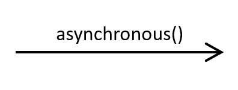

CO886: Software Engineering
Modelling behaviour
Tomas Petricek
email: t.petricek@kent.ac.uk
twitter: @tomaspetricek
office: S129A
{kind=link}
Prehistory and behaviour modelling

Hartree Differential Analyzer, circa 1935
Analog computer solving differential equations
Information flow between components

Herman Goldstine & John von Neumann, circa 1947
Program described as a flow diagrams
Sequence of individual steps with loops and branching
Two aspects of behaviour

Communication patterns
- Interactions of services
- Sending messages over network
- Communication in teams
State change patterns
- Changing state of an object
- Workflow or a process to follow
Modelling behaviour
Tools and practices for state and communication
Lightweight use in whiteboard discussions
Heavyweight software tools with code generation
Range from function logic to business processes
Various directions of programming language support
Capturing communication using sequence diagrams
UML sequence diagrams

Interactions between objects
- Actions in sequential order
- What is passed between what parts
- Explain how business works
Features beyond this lecture
- Actors, objects, anonymous instances
- Deleting and creating entities
- Alternatives, parallelism, options, loops, etc.
UML sequence diagrams

Actors and objects
- Stick figures or objects
- Lifeline with periods of activity
- Write sys:Sytem for an instance
Communication via messages
- Sequential top-to-bottom process
- Written as function calls
- Different kinds of arrows
Fancy arrows
|
Synchronous 
Call another component and wait until it responds |
Asynchronous Call another component but continue running |
Response 
Sent at the end of sync or async call |

Guess the components!

Guess the components!
Checking your Gmail
Web server fetches data from database
Logger records
all events asynchronously
Demo: Modelling PhD application process
Implementing sequence diagrams

Object-oriented programming
I thought of objects being like biological cells and/or individual computers on a network, only able to communicate with messages.
Network and workflows
- HTTP calls between services
- Erlang language and Akka library for Java

Programming Language Support
Formal language
model circa 1978
Session types
to check the communication protocol today
Capturing workflows using state diagrams
UML state machines
State change over time
- State of objects or systems
- Standard computer science idea
- Not as easy to see in code
Features beyond this lecture
- Hierarchical state machines
- Conditions and actions just briefly
- Orthogonal regions, parallel regions
UML state machines

States
- Initial, regular and final states
- Some systems run infinitely
- Can have entry/exit actions
Transitions
- Labels explain what caused them
- Typically correspond to some events
- Conditions can specify when enabled

Guess the system!
Sainsbury's order processing
When can user
cancel an order?
What can happen
after shipping?
Demo: States of a PhD application
Actions and conditions

Actions
What happens when system enters or exits a state
Conditions
When is the transition allowed to happen
State diagrams and programming
Communication device or a programming tool
Understand state of objects in OO model
Model states of a user interface
Imperative and functional patterns at small scale
Complex systems for large scale workflows
Enterprise application integration
Microsoft BizTalk Server is an Inter-Organizational Middleware System that enables companies to automate business processes [and connect] different software systems used in an enterprise.
Implementing state machines

State machines and programming
- State of objects or user interfaces
- Java has "classes" but no "states"!
- How can we best encode the idea?
Functional and imperative patterns
- Variable to represent current state
- Function to represent current state
1: 2: 3: 4: 5: 6: 7: 8: 9: 10: 11: 12: 13: 14: 15: 16: 17: 18: 19: |
|
Object with states
State stored in a field
Update checks state
and modifies it
All logic in one method
Transitions are hidden
in a big switch block
1: 2: 3: 4: 5: 6: 7: 8: 9: 10: 11: 12: 13: 14: |
|
Functions as states
Process going through
multiple states
State are functions
Transitions encoded as calls to other functions
Requires good handling
of recursion and waiting
Demo: User interface for drawing squares
Summary
Modelling behaviour
Two aspects of behaviour
Communication patterns and state change patterns
Also in analog computers (1930s) and EDSAC (1947)
Capturing communication patterns
Basics of UML sequence diagrams
Synchronous, asynchronous and responses
Capturing workflows with state diagrams
Basics of UML state machine diagrams
Implementing state machines at small and large scale
CO886: Modelling behaviour
What you should remember from this lecture
- Sequence diagrams with sync, async and responses
- State machines with states and transitions
- Understand examples and when to use them
Tomas Petricek
t.petricek@kent.ac.uk | @tomaspetricek
References
Academic references
-
Mark Priestley (2018). Routines of Substitution - John von Neumann’s Work on Software Development, 1945–1948
Marie-José Durand-Richard (2018). Towards programming before flowcharts: Diagrams from Babbage to Wilkes
Tools, books and articles